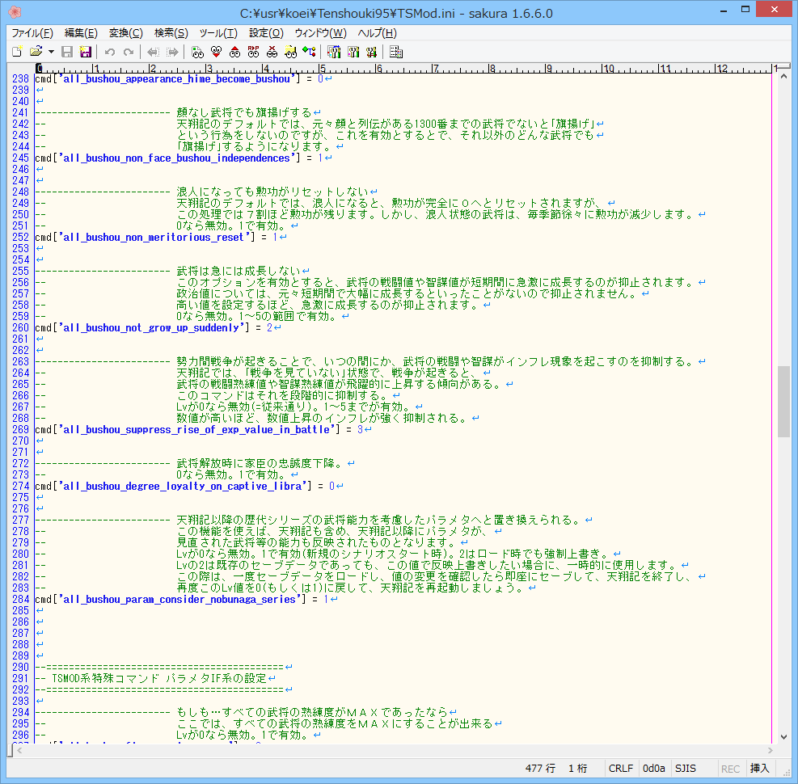
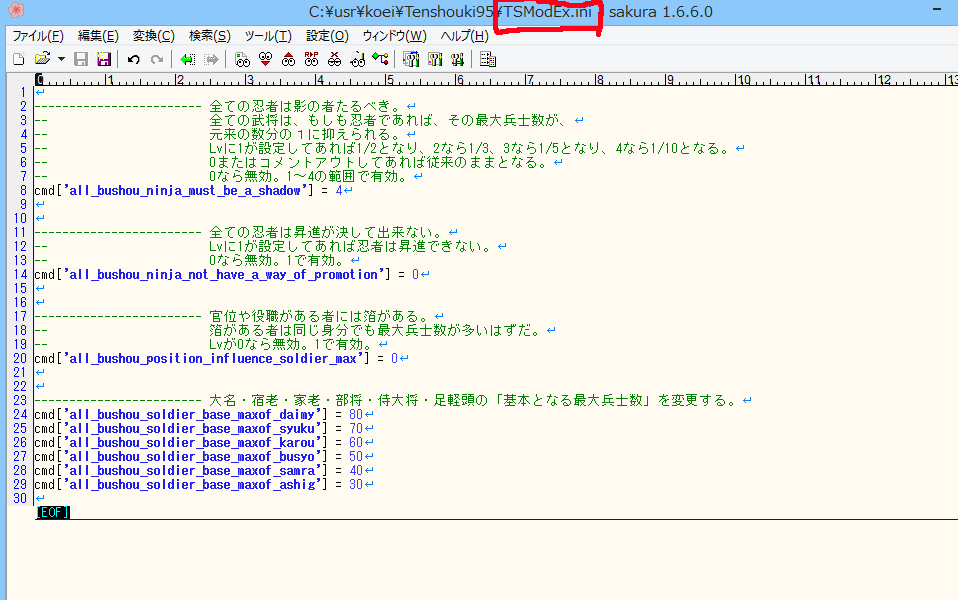
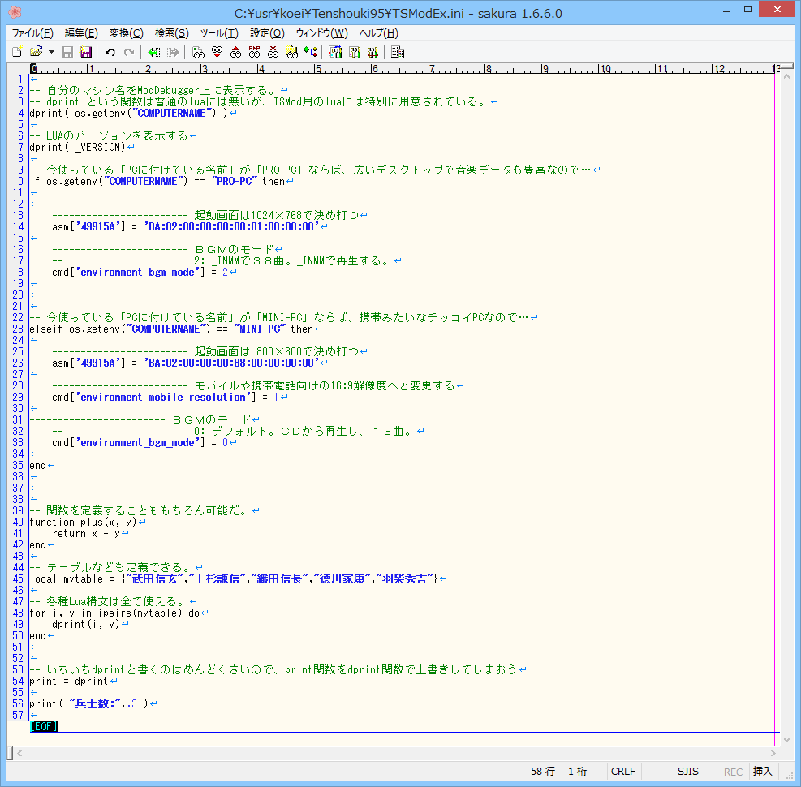

TSMod.iniとは、TSModの挙動をカスタム出来る設定項目が記述されているファイルです。
ご自身のお好みのテキストエディターで設定を自由に書き換えることが出来ます。
テキストエディターを普段利用していないという方は、以下に｢サクラエディタ｣を用意していますので、これを｢天翔記フォルダー｣に入れて利用してください。
このサクラエディタは、若干ながら、TSMod.ini専用にカスタマイズされています。
TSMod.iniファイルを直接編集することにより動作の変更が可能ではあります。
しかし、TSMod.iniは、TSModのバージョンが上がると、ModUpdaterによる最新版取得時に上書きされてしまいます。
ですから、TSMod.ini 自体を編集するのは、あまりお勧めしません。

そこで、TSModEx.iniというファイルを新たに自分で作り、
そこで好みの設定をすることとお勧めします。
TSModEx.iniはTSModが更新されても、上書きされたりしませんので、自由にカスタムできます。

この「TSMod.ini」や「TSModEx.ini」ではLua言語を自由に使うことができます。
たとえば、起動する度に、フォントを変更したり、
日付やPCのマシンによって、特定のパラメータを変更したり、といったことも簡単に出来ます。
また、エラー情報は、「ModDebugger」上に表示されます。
